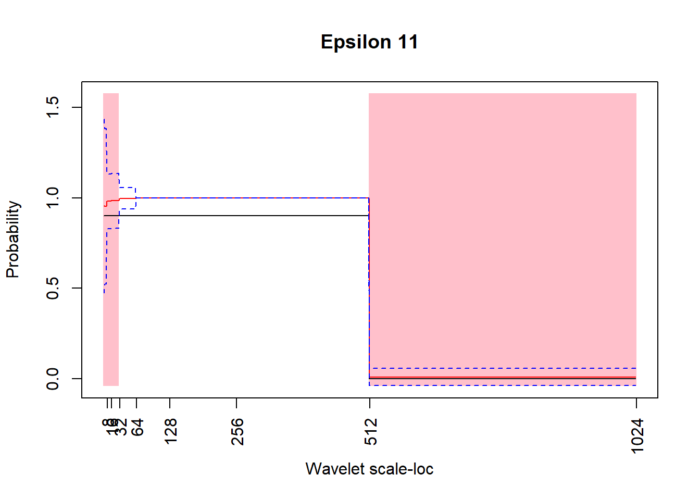
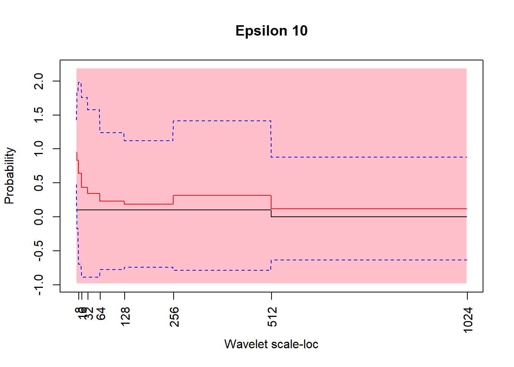
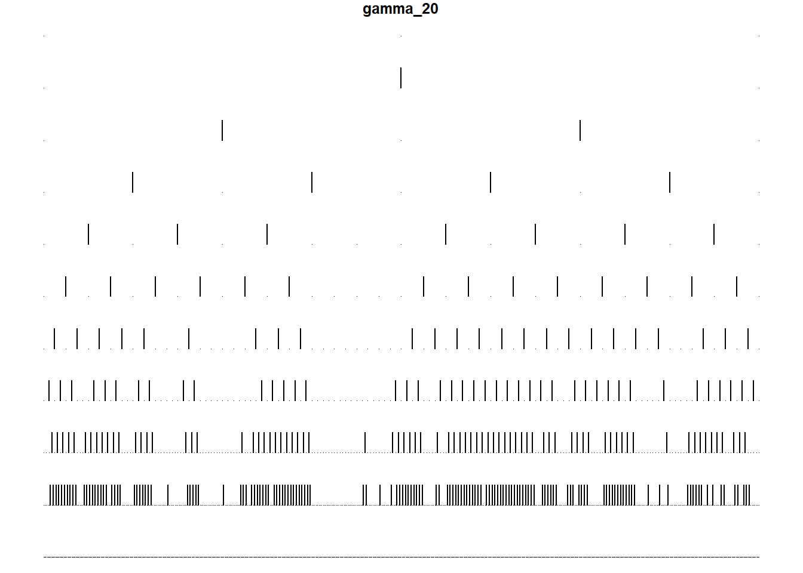
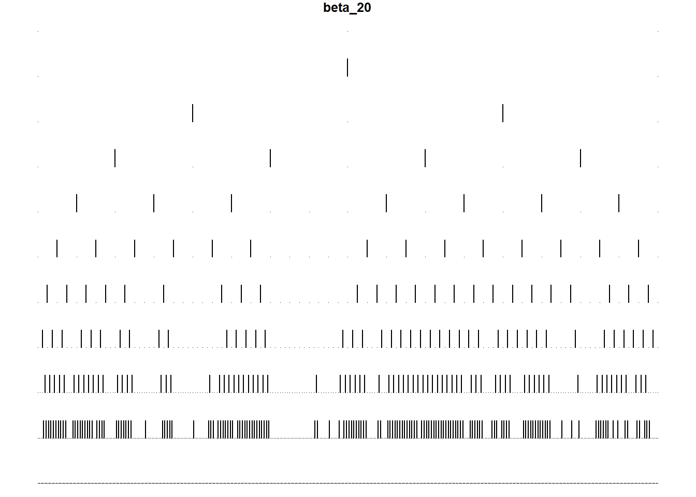
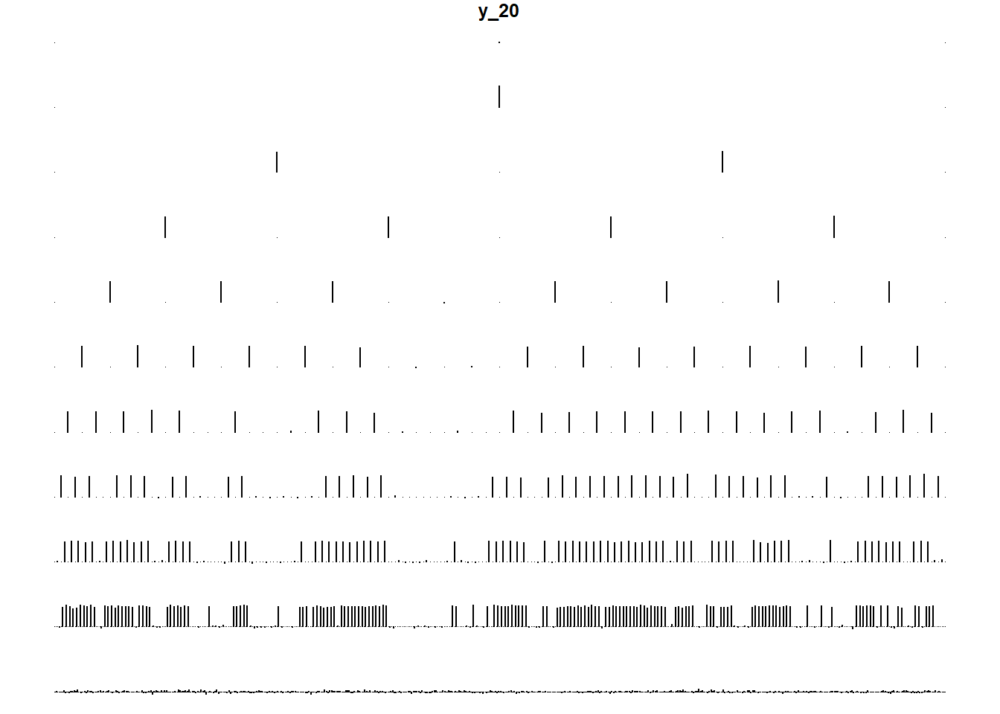

Cutting the details now, and just doing another simulation. Documenting it all here. See “code/sim2_script.R” for the functionalised simulation script. Here are some results:
# Clear environment and do some fresh simulations
rm(list = ls());gc();cat("\014");## used (Mb) gc trigger (Mb) max used (Mb)
## Ncells 509181 27.2 1151170 61.5 607265 32.5
## Vcells 987145 7.6 8388608 64.0 1596445 12.2
# For when running this script in batch, you can use this to override some global parameters
# batch_num_sims = NULL
batch_num_sims = 100Fairly plain vanilla:
# Clear environment and do some fresh simulations
# rm(list = ls());gc();cat("\014");
library(data.table)
source("../code/sim2_script.R")
p_n_ind = 70
p_n_pheno = 1024
p_tying_grp = c(1,2,3,5,9,17,33,65,129,257,513)
p_param_pi_00 = 0
p_param_pi_11 = 1
p_grped_eps_11 = c(rep(0.9,(length(p_tying_grp)-1)),0)
p_grped_eps_10 = c(rep(0.1,(length(p_tying_grp)-1)),0)
p_coeff_mu = 0
p_coeff_beta = 2
p_param_gi_prob = 0.4
p_param_sigma_beta = 0.5
p_num_sims = 100
p_seed = 20
if(!is.null(batch_num_sims)){
p_num_sims = batch_num_sims
}Analysis:
pi_mean <- mean(unlist(results_list$results_pi))
pi_sd <- sd(unlist(results_list$results_pi))
pi_range <- c(pi_mean - 3*pi_sd, pi_mean + 3*pi_sd)
pi_range; p_param_pi_11## [1] 1 1## [1] 1results_eps_11_mtx <- matrix(unlist(results_list$results_eps_11)
,nrow = p_num_sims, ncol = (p_n_pheno - 2), byrow = T)
results_eps_10_mtx <- matrix(unlist(results_list$results_eps_10)
,nrow = p_num_sims, ncol = (p_n_pheno - 2), byrow = T)
eps_11_mean <- apply(results_eps_11_mtx,MARGIN = 2,mean)
eps_11_sd <- apply(results_eps_11_mtx,MARGIN = 2,sd)
eps_11_lb <- eps_11_mean - 3*eps_11_sd
eps_11_ub <- eps_11_mean + 3*eps_11_sd
eps_11_within_range <- between(results_list$param_eps_11,eps_11_lb,eps_11_ub)
table(eps_11_within_range)## eps_11_within_range
## FALSE TRUE
## 480 542eps_10_mean <- apply(results_eps_10_mtx,MARGIN = 2,mean)
eps_10_sd <- apply(results_eps_10_mtx,MARGIN = 2,sd)
eps_10_lb <- eps_10_mean - 3*eps_10_sd
eps_10_ub <- eps_10_mean + 3*eps_10_sd
eps_10_within_range <- between(results_list$param_eps_10,eps_10_lb,eps_10_ub)
table(eps_10_within_range)## eps_10_within_range
## FALSE TRUE
## 2 1020Some more informative plots:
# Epsilon 11
y_axis_bounds <- c(min(min(eps_11_lb),min(results_list$param_eps_11)),max(max(eps_11_ub),max(results_list$param_eps_11)))*1.1
xval = 1:p_n_pheno
which_in_bound = xval[between(results_list$param_eps_11,eps_11_lb,eps_11_ub)]
plot(1,1, type = "n", xlab = "Wavelet scale-loc", ylab = "Probability", main = "Epsilon 11", xaxt = "n"
,xlim = c(0,p_n_pheno)
,ylim = y_axis_bounds)
if(length(which_in_bound) > 0){
for(j in 1:length(which_in_bound)){
polygon(c(which_in_bound[j]-0.5, which_in_bound[j]-0.5, which_in_bound[j]+0.5, which_in_bound[j]+0.5), c(y_axis_bounds[1], y_axis_bounds[2], y_axis_bounds[2], y_axis_bounds[1])
, col ="pink", border = NA)
}
}
axis(1,at = 2^(3:10),labels = 2^(3:10),las = 2)
points(results_list$param_eps_11,type = "l")
points(eps_11_mean,col = "red", type = "l")
points(eps_11_ub,col = "blue", type = "l", lty = 2)
points(eps_11_lb,col = "blue", type = "l", lty = 2)
# Epsilon 10
y_axis_bounds <- c(min(min(eps_10_lb),min(results_list$param_eps_10)),max(max(eps_10_ub),max(results_list$param_eps_10)))*1.1
xval = 1:p_n_pheno
which_in_bound = xval[between(results_list$param_eps_10,eps_10_lb,eps_10_ub)]
plot(1,1, type = "n", xlab = "Wavelet scale-loc", ylab = "Probability", main = "Epsilon 10", xaxt = "n"
,xlim = c(0,p_n_pheno)
,ylim = y_axis_bounds)
if(length(which_in_bound) > 0){
for(j in 1:length(which_in_bound)){
polygon(c(which_in_bound[j]-0.5, which_in_bound[j]-0.5, which_in_bound[j]+0.5, which_in_bound[j]+0.5), c(y_axis_bounds[1], y_axis_bounds[2], y_axis_bounds[2], y_axis_bounds[1])
, col ="pink", border = NA)
}
}
axis(1,at = 2^(3:10),labels = 2^(3:10),las = 2)
points(results_list$param_eps_10,type = "l")
points(eps_10_mean,col = "red", type = "l")
points(eps_10_ub,col = "blue", type = "l", lty = 2)
points(eps_10_lb,col = "blue", type = "l", lty = 2)
Now I’d like to know some more information. Specifically, we would like to know more about:
Firstly, variation in gammas, betas, y’s between simulations. Here’s an example of the 20th, and 80th obs’ y_mtx, beta_mtx, gamma_sequence:
g_20 <- tree_plot(results_list$results_gamma_seq[[20]],yaxis_lims = c(0,1), plot_title = "gamma_20")
beta_20 <- tree_plot(results_list$results_beta_seq[[20]],yaxis_lims = c(0,2), plot_title = "beta_20")
y_avg_20 <- apply(results_list$results_y_mtx[[20]],MARGIN = 2,mean)
y_avg_20_plot <- tree_plot(y_avg_20
,yaxis_lims = c(min(y_avg_20)
,max(y_avg_20)), plot_title = "y_20")
y_summary_20 <- apply(results_list$results_y_mtx[[20]], MARGIN = 1, summary)
graphics.off()
plot(1,1, type = "n", xlab = "Individual #", ylab = "WC-value", main = "Summary stats of simulated WCs for simulation 20"
,xlim = c(0,p_n_ind)
,ylim = c(min(results_list$results_y_mtx[[20]])
,max(results_list$results_y_mtx[[20]])))
lines(y_summary_20[1,], col = "red")
lines(y_summary_20[3,], col = "black")
lines(y_summary_20[6,], col = "blue")
legend("topright",legend = c("Max","Median","Min"),col = c("blue","black","red")
,lty = 1,cex = 0.8, bty = "n")
g_80 <- tree_plot(results_list$results_gamma_seq[[80]],yaxis_lims = c(0,1), plot_title = "gamma_80")
beta_80 <- tree_plot(results_list$results_beta_seq[[80]],yaxis_lims = c(0,2), plot_title = "beta_80")
y_avg_80 <- apply(results_list$results_y_mtx[[80]],MARGIN = 2,mean)
y_avg_80_plot <- tree_plot(y_avg_80
,yaxis_lims = c(min(y_avg_80)
,max(y_avg_80)), plot_title = "y_80")
y_summary_80 <- apply(results_list$results_y_mtx[[80]], MARGIN = 1, summary)
graphics.off()
plot(1,1, type = "n", xlab = "Individual #", ylab = "WC-value", main = "Summary stats of simulated WCs for simulation 80"
,xlim = c(0,p_n_ind)
,ylim = c(min(results_list$results_y_mtx[[80]])
,max(results_list$results_y_mtx[[80]])))
lines(y_summary_80[1,], col = "red")
lines(y_summary_80[3,], col = "black")
lines(y_summary_80[6,], col = "blue")
legend("topright",legend = c("Max","Median","Min"),col = c("blue","black","red")
,lty = 1,cex = 0.8, bty = "n")From the above, we can see the slight variation in the simulated gamma, based on the parameterised proportions we set for each tying group, as well as how noise gets injected into the system between generating gammas and betas, to the resulting y values. Finally, for each simulation, a min/median/max plot of the wavelet coefficients for each of the 70 simulated individuals are shown to demonstrate the differing values of g (our covariate), and how that impacts the wavelet coefficients for that individual. All looks good, and as expected.
Given these simulated values for simulations 20 and 80, what were our resulting parameters? Extract the parameters corresponding to each tying level (otherwise we would get a very long vector of parameters with lots of duplicates).
# Epsilon parameters
# Include a 0,0 in front, as the eps results only give results for the transitions, which excludes any transition to the scaling coefficient (as there is none), or between the scaling coefficient and the head of the tree.
eps_11_s20 <- c(0,0,results_list$results_eps_11[[20]])[p_tying_grp]
eps_10_s20 <- c(0,0,results_list$results_eps_10[[20]])[p_tying_grp]
eps_11_s80 <- c(0,0,results_list$results_eps_11[[80]])[p_tying_grp]
eps_10_s80 <- c(0,0,results_list$results_eps_10[[80]])[p_tying_grp]
print("Simulation 20...")## [1] "Simulation 20..."print("Eps_11")## [1] "Eps_11"round(eps_11_s20[-(1:2)],2); p_grped_eps_11[-(1:2)]## [1] 1.00 1.00 1.00 1.00 1.00 1.00 1.00 1.00 0.01## [1] 0.9 0.9 0.9 0.9 0.9 0.9 0.9 0.9 0.0print("Eps_10")## [1] "Eps_10"round(eps_10_s20[-(1:2)],2); p_grped_eps_10[-(1:2)]## [1] 1.00 1.00 0.62 0.00 0.00 0.86 0.13 0.06 0.00## [1] 0.1 0.1 0.1 0.1 0.1 0.1 0.1 0.1 0.0print("Simulation 80...")## [1] "Simulation 80..."print("Eps_11")## [1] "Eps_11"round(eps_11_s80[-(1:2)],2); p_grped_eps_11[-(1:2)]## [1] 1 1 1 1 1 1 1 1 0## [1] 0.9 0.9 0.9 0.9 0.9 0.9 0.9 0.9 0.0print("Eps_10")## [1] "Eps_10"round(eps_10_s80[-(1:2)],2); p_grped_eps_10[-(1:2)]## [1] 1.00 1.00 1.00 1.00 1.00 0.71 0.00 0.01 0.00## [1] 0.1 0.1 0.1 0.1 0.1 0.1 0.1 0.1 0.0We can see here that we have a little issue. The first row of each are the parameters, at each tying level, retrieved by our algorithm. The second line are the initialised parameters we set out for the model to find. We can see that, especially for Eps_11, our algorithm has not done well in retrieving the required parameters. In particular, Eps_11 is a fairly constant ‘1’ for all levels except the last (as expected), corresponding to the extremely high confidence (narrow band) corresponding to the simulated estimate of ‘1’ for Eps_11 in the middle tree levels, as we saw in the Epsilon_11 plot above. Eps_10 suffers from a similar fate, especially at the first few tying levels.
And lastly, based on the gammas we simulated, what were our sampled proportion of eps 11,10,01,00 that we were expecting? And how did it align with what our algorithm actually output? This one involves a little bit of tedious data manipulation. Also, add on the initial parameterisation (the goal), and the parameters which our algorithm recovered.
get_gamma_transition_props <- function(eps_no_scale_data, tying_grp_vect, n_pheno){
gamma_and_parent <- matrix(c(eps_no_scale_data[get_parent_indices(1:(n_pheno-1))],eps_no_scale_data)
, nrow = 2, ncol = (n_pheno-1)
, byrow = T)
gamma_and_parent_dt <- as.data.table(t(gamma_and_parent))
setnames(gamma_and_parent_dt,names(gamma_and_parent_dt),c("Parent","Child"))
gamma_and_parent_dt[,"Transition" := paste0(Child,Parent)]
gamma_and_parent_dt[,"TreeLvl" := findInterval(.I + 1,tying_grp_vect[-1])]
# Exclude the root
gamma_and_parent_dt <- copy(gamma_and_parent_dt[-1])
gamma_and_parent_stats <- dcast.data.table(
gamma_and_parent_dt[,.N,by = .(Transition,TreeLvl)]
,formula = TreeLvl ~ Transition
,value.var = "N"
,fill = 0
)
transitions_not_there <- setdiff(c("11","01","10","00"),names(gamma_and_parent_stats))
if(length(transitions_not_there) > 0){
for(col in transitions_not_there){
gamma_and_parent_stats[,(col) := 0]
}
}
gamma_and_parent_stats[,"Total" := apply(.SD,1,sum),.SDcols = 2:5]
return(gamma_and_parent_stats[])
}
print("Simulation 20...")## [1] "Simulation 20..."# Set up a two row matrix - parents on top row, children on bottom row.
gamma_noScale_s20 <- results_list$results_gamma_seq[[20]][-1]
gamma_transitions_s20 <- get_gamma_transition_props(gamma_noScale_s20,tying_grp_vect = p_tying_grp,n_pheno = p_n_pheno)
# Add simulated data
gamma_transitions_s20[,c("sim_eps_11","sim_eps_10") :=
.(`11`/(`11`+`01`)
,`10`/(`10`+`00`))]
gamma_transitions_s20[,c("param_eps_11","param_eps_10") :=
.(p_grped_eps_11[-(1:2)]
,p_grped_eps_10[-(1:2)])]
gamma_transitions_s20## TreeLvl 00 01 10 11 Total sim_eps_11 sim_eps_10 param_eps_11
## 1: 2 0 0 0 2 2 1.0000000 NaN 0.9
## 2: 3 0 0 0 4 4 1.0000000 NaN 0.9
## 3: 4 0 1 0 7 8 0.8750000 NaN 0.9
## 4: 5 2 0 0 14 16 1.0000000 0.00000000 0.9
## 5: 6 4 4 0 24 32 0.8571429 0.00000000 0.9
## 6: 7 15 7 1 41 64 0.8541667 0.06250000 0.9
## 7: 8 39 10 5 74 128 0.8809524 0.11363636 0.9
## 8: 9 90 15 8 143 256 0.9050633 0.08163265 0.9
## 9: 10 210 302 0 0 512 0.0000000 0.00000000 0.0
## param_eps_10
## 1: 0.1
## 2: 0.1
## 3: 0.1
## 4: 0.1
## 5: 0.1
## 6: 0.1
## 7: 0.1
## 8: 0.1
## 9: 0.0print("Simulation 80...")## [1] "Simulation 80..."# Set up a two row matrix - parents on top row, children on bottom row.
gamma_noScale_s80 <- results_list$results_gamma_seq[[80]][-1]
gamma_transitions_s80 <- get_gamma_transition_props(gamma_noScale_s80,tying_grp_vect = p_tying_grp,n_pheno = p_n_pheno)
# Add simulated data
gamma_transitions_s80[,c("sim_eps_11","sim_eps_10") :=
.(`11`/(`11`+`01`)
,`10`/(`10`+`00`))]
gamma_transitions_s80[,c("param_eps_11","param_eps_10") :=
.(p_grped_eps_11[-(1:2)]
,p_grped_eps_10[-(1:2)])]
gamma_transitions_s80## TreeLvl 00 01 10 11 Total sim_eps_11 sim_eps_10 param_eps_11
## 1: 2 0 0 0 2 2 1.0000000 NaN 0.9
## 2: 3 0 0 0 4 4 1.0000000 NaN 0.9
## 3: 4 0 0 0 8 8 1.0000000 NaN 0.9
## 4: 5 0 0 0 16 16 1.0000000 NaN 0.9
## 5: 6 0 4 0 28 32 0.8750000 NaN 0.9
## 6: 7 8 4 0 52 64 0.9285714 0.00000000 0.9
## 7: 8 23 12 1 92 128 0.8846154 0.04166667 0.9
## 8: 9 63 19 7 167 256 0.8978495 0.10000000 0.9
## 9: 10 164 348 0 0 512 0.0000000 0.00000000 0.0
## param_eps_10
## 1: 0.1
## 2: 0.1
## 3: 0.1
## 4: 0.1
## 5: 0.1
## 6: 0.1
## 7: 0.1
## 8: 0.1
## 9: 0.0